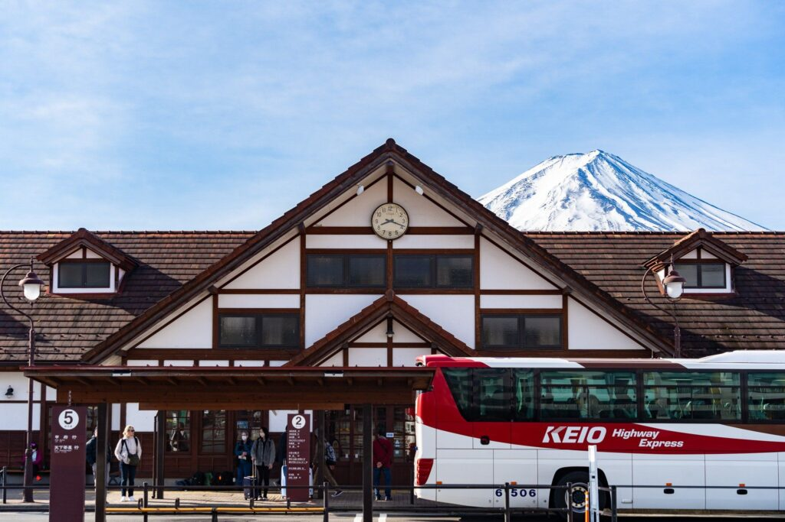
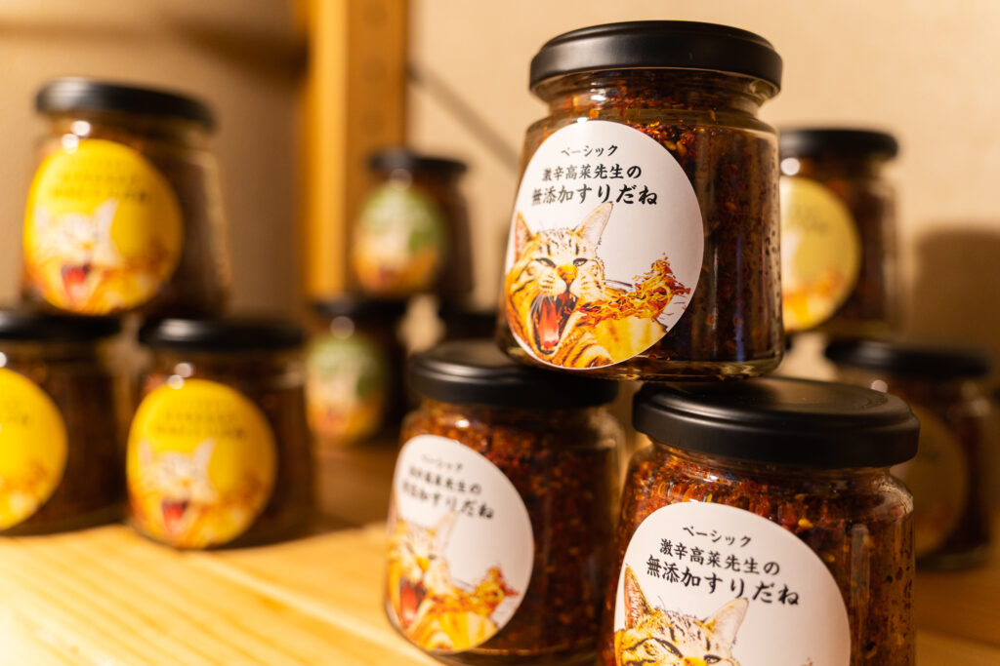
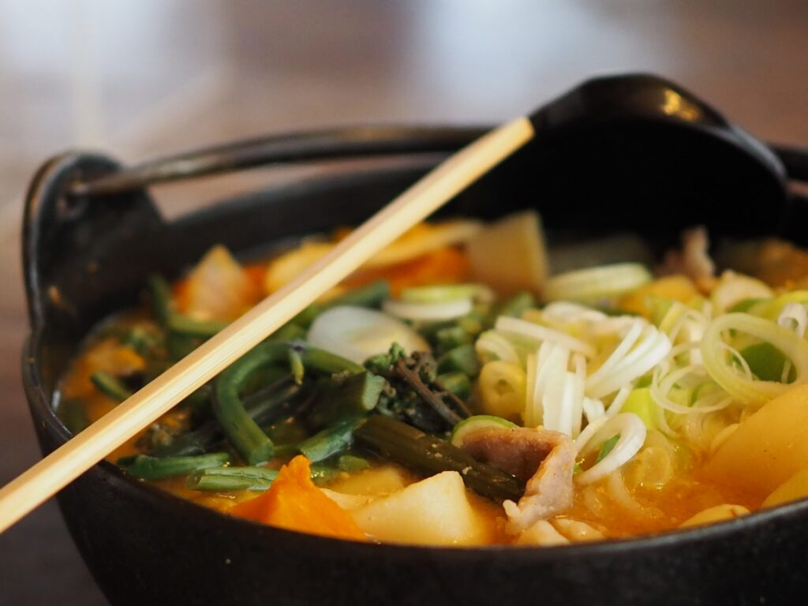
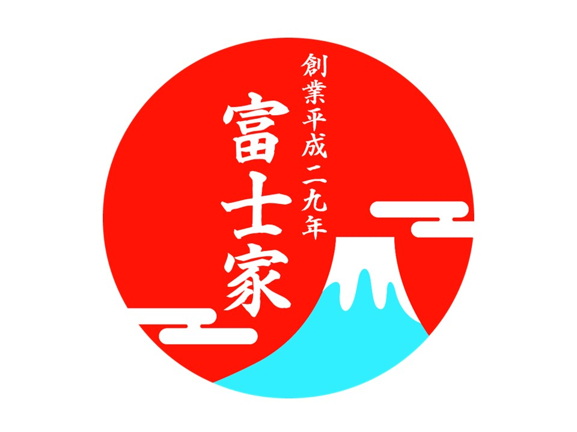

※All listed prices are excluding tax
Get ¥500 discount for under 12 years old
No charge for under 4 years old
Popular Set Menu
| Indigo Dyeing Experience Set | |
|---|---|
| Noodle-Making Experience + Indigo Dyeing Experience Set A set that includes your choice of noodle-making experience and the popular indigo dyeing experience. Through hands-on work and individual creativity, original dyed fabrics are created. A material fee of ¥500 or more will be charged separately. |
|
| Shichimi Spice-Making Experience Set | |
| Noodle-Making Experience + Shichimi Spice-Making Experience Set A set that includes your choice of noodle-making experience and an original shichimi (seven-spice blend) making experience using natural ingredients. Shichimi chili pepper is a traditional Japanese medicinal spice, but at our shop, you can create a custom blend to suit your taste. A special bottle is also included as a gift. |
|
| Yamanashi Souvenir-Making Experience Set | |
| Noodle-Making Experience + Suridane Spice-Making Experience Set A set that includes your choice of noodle-making experience and a custom suridane (versatile spicy seasoning) blending experience. Suridane is a specialty chili-based seasoning from the Fuji Five Lakes area. The basic recipe includes sesame and sesame oil, but you can create your own original blend to match your preferences. |
|
| Kuromitsu Kinako Mochi-Making Experience Set | |
| Noodle-Making Experience + Kuromitsu Kinako Mochi Experience A set that includes your choice of noodle-making experience along with a popular sweet-making experience. |
|
| Signature Souvenir Two-Item Experience Set | |
| Suridane Spice-Making + Kuromitsu Kinako Mochi-Making Experience A set that includes two popular souvenir-making experiences. The Kuromitsu Kinako Mochi can be enjoyed on the spot. |
À La Carte & Optional Menu
Individual menu items can be combined within your group, but please note that there may be waiting times. If everyone in your group chooses the same experience, the process will be smoother.
| Single Noodle-Making Experience | |
|---|---|
| Traditional Hōtō Noodle-Making | ¥3,500 |
| Jiro-Style Ramen-Making Experience | ¥3,500 |
| Fujiyoshida Specialty Yoshida Udon-Making | ¥3,500 |
| Oshino Hakkai Soba-Making | ¥3,500 |
| Optional Experiences | |
| Take-Home Noodle-Making (Additional) | ¥700 |
| Kuromitsu Kinako Mochi-Making | ¥700 |
Experiences Without a Meal
Would you like to take home the noodles you made or the shichimi spice you blended as a souvenir from your Yamanashi trip?
At the Fujika Experience Workshop, we also offer experiences without a meal.
Recommended for those who have limited time or have already eaten.
Features of the No-Meal Experience

The noodle-making experience without a meal lets you fully enjoy the process, even though a meal is not included.
Feature 1: Quick and Enjoyable
The regular experience takes 90 to 120 minutes, but the take-home experience can be completed in under 60 minutes, making it ideal for those with limited time.
Feature 2: Enjoy It at Home
After returning home, you can share and enjoy the taste of your handmade udon with family and friends, making it a great souvenir.
Feature 3: A Full Experience
Aside from not including a meal, this experience is the same as the regular one, so you can participate with confidence.
Recommended for:
- Those who want to experience it but have limited time
- Those who already have meal plans before or after
- Those who want to make a souvenir
- Those who want their family or friends to try their handmade noodles
Pricing
| No-Meal Noodle-Making Experience Plan | |
|---|---|
| Take-Home Noodle-Making Experience Serves 2 |
¥2,500 |
| Take-Home Noodles + Suridane Spice-Making Experience Set Serves 2 + Suridane Spice-Making Experience |
→¥3,980 |
| Take-Home Noodles + Shichimi Spice-Making Experience Set Serves 2 + Take-Home Shichimi Spice-Making Experience |
→¥3,980 |
| Yamanashi Souvenir & Shichimi Spice-Making Experience Plan | |
| Shichimi Spice-Making Experience | ¥1,700 |
| Signature Suridane Spice-Making Experience | ¥1,700 |
| Suridane Spice-Making + Kuromitsu Kinako Mochi Experience | ¥2,200 |
| Dyeing Experience Plan | |
| Dyeing Experience | ¥3,200 |
| Clothing Dyeing Experience + Take-Home Noodles Set Dyeing + Noodle-Making Experience Set |
→¥5,500 |
RESERVEWe accept your application for 24/7
CONTACT If there is anything we can help you with, please do not hesitate to contact us.
Look at the participating customers
These are participated customers.


{kind=link}
{kind=link}
{kind=link}
{kind=link}
{kind=link}
{kind=link}
{kind=link}
{kind=link}
{kind=link}
{kind=link}
{kind=link}
{kind=link}
Reviews
{kind=link}
{kind=link}
{kind=link}
RESERVE We accept your application for 24/7
CONTACT If there is anything we can help you with, please do not hesitate to contact us.
Q and A
Please read the frequently asked questions.
Please contact us if you have any questions.
- Is it available in English
- Yes. Staff can speak English as we welcome all international guests.
- How many people can maximum cook at the same time?
- It depend on the place where you chose but, we accept 100 people at the same time.
- Is it possible to cook it if I have nails done?
- Yes. If you would like globes please ask.
- Do you accept credit card?
- Yes. We do accept credit card.
- How long does it take to get to the Kawaguchi lake?
- >It is 10 minutes by car.
- How long does it take to get there from the closest station?
- It takes for 15 minutes from Kawaguchiko station by walk.
- Do you have parking space?
- Yes. Free parking is available.
- When should I make a reservation?
- Please make a reservation. You can make a reservation via email, LINE, or Instagram.
- Can I make a booking in the early morning or late at night?
- Yes. You can book it 24/7 from here(Contact us!!). Please book it at anytime.
- Do I need to clean up?
- No. Staff will clean up, after finished eating.
- How long is the hand on course?
- It is for about 1.5h to 2h.
- What do I need to bring with me?
- We prepare everything you need. There is nothing you have to bring with you. Though, we don’t have any aprons for children so, if you think that you may need it, please bring it.
- Vegan or Vegetarian can eat it?
- Yes. Please be assured that we don’t use Dashi(made by dried fish)for Hoto.
- Who will participate ? Only good cooks?
-
There are many young people, family and group of people. Please be assured if you don’t usually cook, we can help you.
You can see here people cooking.
- Is it possible to join if I have never cooked in my life?
- Yes. Please be assured that staff always help you especially when you use knifel.
- Can I join this hands on course with little children?
- Yes. There are lots of people who join this hands on course with children. Please be careful using fire and knifes around children.
- Do you mind if I take a picture or video?
- Yes, please. We are welcome to post it on SNS or Blog.
How to book
- ≪Visit an application≫
- We accept a booking from LINE or Mail.
- ≪Submit the date and how many people you want to join≫
- Please book reservations with me in advance the day before. Please send us your desired experience participation date and time, the number of participants, and the experience menu. If you have any food allergies or religious reasons that you cannot eat, please let us know in advance.
- ≪Confirm your booking≫
- Your reservation has been confirmed. If you wish, you can order a side menu such as tempura or horse sashimi with the meal of the day.
- ≪About payment≫
- You can pay at the store by credit card, QR code payment, cash, or smartphone payment. If you wish, you can also pay before coming to the store.
RESERVE We accept your application for 24/7
CONTACT If there is anything we can help you with, please do not hesitate to contact us.
Access to the experience place
Fujiya

| Adress | 3376-3 Funatsu, Fujikawaguchiko Town, Minamitsuru District, Yamanashi Prefecture 〒401-0301 |
| Parking | Free parking is available. 10 cars can be parked there. |
| Reservable time | AM 10:00~PM 6:00 |
| Number of participants required to hold the experience | 1 person～ |
| Nearest station | Fujikyuko Line Kawaguchiko Station (12 minutes on foot) |
How to access to Fujiya
A closest station… Kawaguchiko station (12 mins by walk)

- Exit Kawaguchiko Station and turn left to reach the Kofu Highway (Prefectural Route 707).
- Head southeast on Kofu Highway. Continue straight on this road.
- After about 1.8 kilometers, you will see your destination, 3376-3 Funatsu, on your right.
Please keep in mind that this is a rough guide and the actual route may vary. Also, ensure that you choose safe paths for pedestrians. There may be sections of the road without sidewalks, so be careful of vehicle traffic.
Suridane for gift


We sell Suridane for gift
The Suridane is a special seasoning that fried sesame and Japanese pepper with chilles
You will definitely see Suridane when you go to Udon or Hoto restaurants in Yamanashi.
It is not only for Udon. The seasoning goes very well with many sorts of foods. It is not just chilly, it is flavorful so, we do recommend you if you are not a huge fan of chilles.
RESERVE We accept your application for 24/7
CONTACT If there is anything we can help you with, please do not hesitate to contact us.
What is Hoto about?

Hoto is eaten around Yamanashi which is very famous local dish.Thick and long noodles made from wheat flour are boiled and then simmered with miso soup, pumpkins and othervegetables.
There is also “Yoshida Udon”, a local dish of Fujiyoshida City, which has a culture of making flour food. It was selected as one of the “100 Best Local Cuisines in Noriyama Fishing Village”. “Hoto” is much more widespread throughout Yamanashi Prefecture than “Yoshida Udon”. The popularity of “Hoto” as a local dish of Yamanashi is closely related to the climate of Yamanashi Prefecture.
Greeting from the representative director at hands on class Fujiya.

Thank you for visiting our website. I am representative director Kuwabara.
“Hoto” is a typical local dish in Yamanashi. Hoto is very popular among locals and tourists since long time ago.
The reasons why I have started this hands on course is I actually had experience of making local dish when I went to
travel and it was really fun. So, I really want you to cook and eat a popular local dish in Yamanashi.
I am very delightful a lot of people join us and when I hear “It was fun” “It was delicious because I cooked” a lot.
We will all try our best to all the people who join us to spend fun time.
Japanese cooking class FUJIYA
Jun Kuwabara